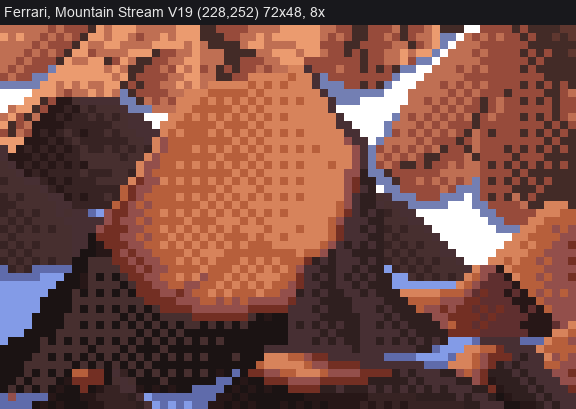
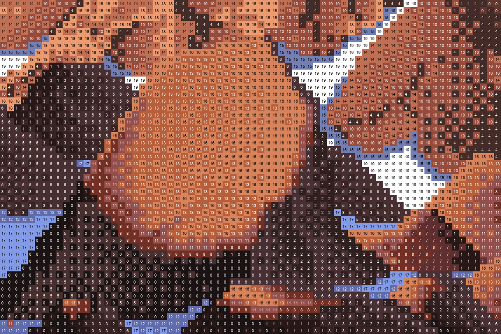

1. Read a master's crop as text
← front page · next: the lit stone →
When: before you write a single rule for a material. Find the nearest thing your master painted (for cobbles, Ferrari's lit boulders in Mountain Stream, V19) and read it pixel by pixel.
Looking at a crop at 8× tells you the gestalt. It doesn't tell you which class sits where, and that is the rule you need. Text does.

Ferrari, Mountain Stream (V19), 72×48 at (228,252), 8×. There's a lit rounded boulder in the middle, shadow-family boulders on the left, and snow wedges and lit crags at top right.
Step 1: rank the colours by value and print the crop
A crop of an indexed painting has few colours (this one has 20). Sort them by luminance, give each a character, and print the crop. From scratch/grid.py:
im = np.array(ferrari('V19', (228, 252, 300, 300)))
u, inv = np.unique(im.reshape(-1, 3), axis=0, return_inverse=True)
L = 0.2126 * u[:, 0] + 0.7152 * u[:, 1] + 0.0722 * u[:, 2]
rank = np.argsort(np.argsort(L)) # 0 = darkest
R = rank[inv].reshape(im.shape[:2])
ch = '0123456789ABCDEFGHIJ'
for y in range(R.shape[0]):
print('%2d ' % y + ''.join(ch[r] for r in R[y]))
Print the palette with the ranks too, so you know that D = (183,95,59), G = (215,131,91), B = (151,75,59), 8 = (115,47,35), 0 = (27,19,19). Then read the rows out loud. Here are rows 9–11 across the boulder's crown and rows 26–28 across its bottom (lines trimmed at the right):
9 JJJII4A11566666FF4EAEAGGGDGDGDGDGDGDGDGGG6FFFJJJJJJEEAEAEAEA
10 JEII4A1131535556FFFEEEGGDDDDDGDGDGGGGGGGG6JJJJJJJJEEEEAEAEAA
11 EIA4E1131335353566JJJGGDGDGDGDGDGDGDGGGGGG6JJJJJJFEAEAEAEAE4
...
26 535555555660888BBDBDDGDGDGDGDDDGDGGDGGGGGD8666225355556JJJJJ
27 3535355556601888BBDDGDGDGDGDGDGDDDGGGGGGDB62626235353556JJJJ
28 535355555600118B8BBDDDDGDGGGDDDDDDDDDGDDB2662222535355566JJJ
What it says, rule by rule:
- The lit face is only G and D. There are rows of
GDGDand rows ofDDDD, and G gets denser to the right (toward the sun). It never shows a pure field of either. - The top rows at the crown are solid G (
GGGGG). - Going down-left into the shadow side, you read D →
B→88→0: a crescent 3–5 px thick, in bands. - Under the stone, the ground is
0, then05050(a checker), then5555further off.
For this crop that's the whole painter. Page 2 writes it as code.
A rendered version helps too. Draw each pixel big with its rank written on it (scratch/classmap.py):

Step 2: copy with the layout sketched, and the interior generated
To test whether you've understood, copy the crop. But don't trace it. Take only the layout (which region is a lit boulder, which is shadow, snow or ground) as a copyist's sketch. Then generate every pixel inside the regions from your rules. From stage0_copy.py:
# which classes vote for which kind of region (ambiguous classes vote half)
VOTES = {'lit': {7: 1, 8: 1, 11: 1, 13: 1, 16: 1},
'darkb': {1: 1, 3: 1, 5: .5, 6: .5},
'ground': {0: 1, 5: .5},
'cast': {2: 1, 6: .5},
'bg': {4: 1, 9: 1, 10: 1, 14: 1, 18: 1},
'snow': {15: 1, 19: 1}, 'snowsh': {12: 1, 17: 1}}
def sketch(R, win=3):
names = list(VOTES)
votes = []
for k in names:
v = np.zeros(R.shape)
for c, w in VOTES[k].items():
v += w * (R == c)
votes.append(ndi.uniform_filter(v, win)) # majority over 3x3: regions, not pixels
return np.stack(votes).argmax(0), names
Then each connected region is painted by its painter (paint_lit_boulder, paint_dark_boulder, paint_ground_shadow, …) in the crop's own colours.

His crop (left) and my copy (right) at 8×. Blurred Lab difference is 5.07 over the crop and 3.41 on the boulder.
Step 3: compare as text too, and count
Print his grid and yours side by side, with the same rows and columns (scratch/cmpgrid.py):
27 601888BBDDGDGDGDGDGDGDDDGGGGGGDB62626235 0588888BBBBDBDDDDDDGDGDGDGDGDGB826262613
28 00118B8BBDDDDGDGGGDDDDDDDDDGDDB266222253 5566B888BBBBDBDDGDGDGDGDGDGDGB8262626233
29 055588B8BBDDGDGDGDDDGDGDGDDD826266626235 051588888BBBBBBDDDDDDDDDDGDGB82626262611
My crescent (88888) is two pixels fatter than his. Confirm it with a count of each class inside the same mask (scratch/hist.py):
for c in [0, 8, 11, 13, 16]:
print(c, (R[m] == c).sum(), (out[m] == c).sum()) # his, mine
# 8 61 94 <- my core was 50% too big: narrow the core band
# 11 81 72
# 13 274 265
# 16 312 322
Then change one parameter, and print again.
Traps
- Tracing. If your "copy" reads his pixels, it teaches you nothing. Majority-filter the layout so only regions survive.
- Judging by eye alone at 8×. Both images looked "close" to me long before the text grids agreed. The grid shows a 2-pixel error the eye forgives.
- Degenerate regions. The majority sketch leaves a few 1–2 px regions, and any per-region fit (I used
np.covfor an ellipse) returns NaN and floods the console with warnings. Drop regions under ~4 px before fitting. I didn't, and I learned to read past the warnings, which is worse.
What it gave me
Every rule on pages 2–5 came out of about fifteen minutes of reading this grid. I did the same for the dusk tarn's shore stones (the analysis student's crop, which I located in the native frame by template-matching at 8×: an exact match at (245,400)), and that reading became the small-stone lozenge on page 4 and the lap line on page 9.